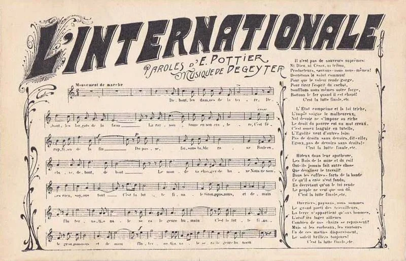

Publication d’archives
🚩 23 juillet 1888 - L'Internationale est jouée pour la première fois à Lille par la chorale de la Lyre des…
Date indiquée par Facebook · 23 juillet 2021
Texte conservé avec la publication
Contexte du dossier
Le 25 avril, journée nationale du souvenir de la déportation, la publication restitue le serment des survivants de Buchenwald : poursuivre le combat contre le nazisme et construire un monde de paix et de liberté. Le 23 juillet, un rappel consacré à L’Internationale associe les paroles d’Eugène Pottier à la musique de Pierre Degeyter et à leur première exécution lilloise. L’un est né d’une épreuve extrême, l’autre porte une espérance ouvrière. Les rapprocher dans cette histoire militante montre comment paroles collectives et chants peuvent transmettre une responsabilité, bien au-delà de leur moment de naissance.

Sources
Archive rouge · export Facebook · AR-0002-FB-02025
À lire aussi · Marcel Paul, au-delà d’un nom de parking